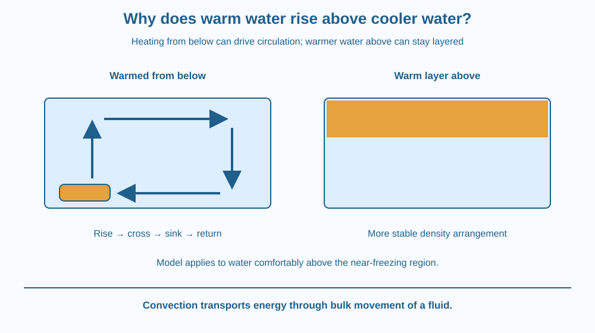

Explain how heating one part of a liquid can produce a circulating flow. Trace both the upward and return paths of a convection current. Identify when the model applies and why putting warmer water above cooler water can produce a different arrangement.
Imagine a transparent tank of water warmed gently from below. Water near the heated region may rise, while other water moves down to replace it. A small coloured marker can reveal a looping path rather than a single upward journey.
Now imagine the warmer water already sitting on top. It may remain layered for a while instead of mixing by the same strong circulation. The ingredients are still water and heat. What changed is the position of the warm region relative to the cool region.
Understanding that arrangement is more useful than memorising “hot water always goes up.”
Convection is the transport of energy through the bulk movement of a fluid. A fluid can be a liquid or a gas. Here the fluid is water, and the important feature is that parcels of water move from one region to another.
For water at ordinary room temperature and above, warming generally makes a given mass occupy a slightly larger volume. Its density, mass per unit volume, becomes lower than that of nearby cooler water. This comparison concerns the same substance at different temperatures.
If the warmer, less dense water is below cooler, denser water, the arrangement can become unstable. The warmer water tends to rise through its surroundings. Cooler water moves downward and inward to replace the water that left the heated region.
The return route matters. A container does not create an empty hole at the bottom when water rises. A complete convection current includes rising flow, sideways movement, sinking flow and a return toward the heated area. Actual currents may be irregular rather than perfect circles.
As moving water reaches cooler regions, it can transfer energy to its surroundings. Temperature differences change, and the flow pattern adjusts. Continued heating from below can maintain circulation if the temperature differences remain sufficient.
This is different from energy moving through a stationary metal spoon. In conduction, material need not travel along the whole transfer route. In convection, the moving water itself carries energy between regions. Both processes can occur in the same container, but they are not the same mechanism.
If warmer water is above cooler water, the density arrangement is more stable. Strong overturning is less easily produced by that arrangement alone. Energy can still transfer by other routes, and disturbances can still mix the liquid. “No vigorous convection” does not mean “no energy transfer.”
Water has an important exception near freezing: its density does not follow the same simple warming rule throughout the entire temperature range. This lesson considers water comfortably above that region. We do not use the model to explain ice floating, a topic already covered earlier.
Draw a rectangular tank with a warm patch beneath one side. Put an upward arrow above that patch, a sideways arrow across the top, a downward arrow at the other side and a return arrow along the bottom.
Mark a small parcel and follow it around the loop. Its temperature need not remain fixed throughout the route. It receives energy near the warm patch and can lose energy elsewhere.
Then erase the bottom heater and put a warm layer at the top. Ask which part of the first explanation no longer fits. The lower water is no longer made less dense than the water above it, so the same overturning argument does not apply.
The SVG shows two tanks. In the first, a warm region at the lower left produces an upward arrow and a complete return loop. A blue region at the opposite side marks relatively cooler sinking water.
The second tank has warmer water above cooler water. A divider-like colour boundary represents the more stable layering; it is not a physical wall. Labels explain why the two temperature arrangements have different tendencies to overturn.
The arrows are a simplified model of bulk flow. Their widths do not represent measured speeds, and the picture does not imply that every real tank produces one tidy circular current.

Water in cooking vessels can circulate as different parts receive energy. This helps distribute heat, although thick foods may resist flow and need stirring. This is a connection to the mechanism, not an instruction to experiment beside a stove.
A room with warm air entering near the floor can develop circulation too. Air is a different fluid, but moving parcels again transport energy. Real rooms also contain furniture, openings and fans that alter the pattern.
A water-storage tank can sometimes develop layers with different temperatures. Its shape, incoming water and disturbances influence whether layers persist. Heating does not guarantee immediate uniform temperature everywhere in the tank.
Use paper, coloured pencils and four arrow-shaped scraps torn from paper. No hot-water experiment is required.
Ask another person to trace a single parcel without jumping across a gap. If your model has only an upward arrow, add the missing return pathway. The activity checks a flow explanation safely rather than trying to produce a visible current in a small kitchen container.
Suppose a fan or pump forces water to move through a tank. The fluid can carry energy even if warming did not initiate its movement. This is called forced rather than naturally driven convection.
Now imagine a very thick paste heated at the bottom. Why might the warm region remain more local than it would in freely flowing water? Use resistance to bulk movement in your explanation, without assuming that energy transfer has stopped altogether.
What moves energy during convection?
Answer: C — Moving parcels of liquid or gas carry energy between regions.
Why must other water replace water rising from the bottom?
Answer: B — A continuing circulation needs a return flow rather than an empty gap.
Warm water is placed above cooler water. What is likely without stirring?
Answer: A — The less dense upper water is not being driven upward through denser water above it.
Design two diagrams for a younger student: one showing a complete natural convection loop and one showing a stable warm-over-cool arrangement. Use the same tank shape and the same total amount of water.
Explain the changed initial arrangement rather than merely drawing different arrows. Include one sentence about why a tank cannot keep sending water upward without some other water replacing it from elsewhere.
A warm parcel does not carry a permanent label saying “up.” Its motion depends on its density relative to nearby fluid and on the surrounding flow. Moving it to a different environment can change the result. This is why the comparison between neighbouring regions matters more than the word warm alone.
Warming from below can drive a complete convection loop: warmer water rises while cooler water returns to replace it.